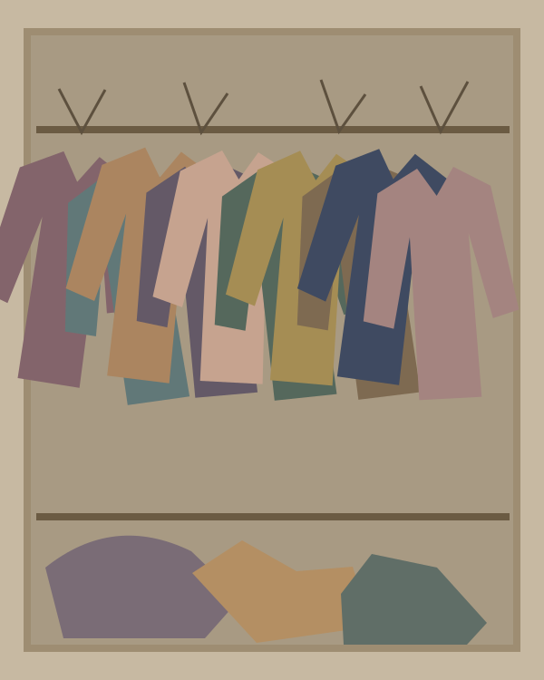
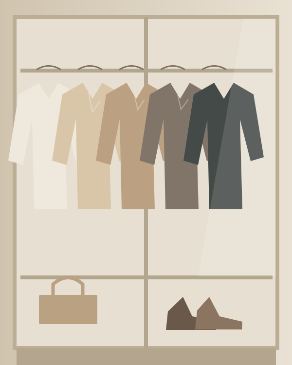
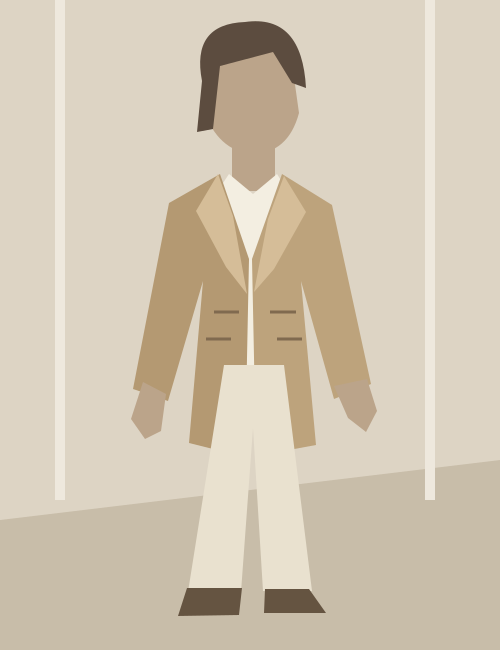

LONDON-BASED PERSONAL STYLIST
Dress like
you mean it.
EDIT Studio helps individuals and executives build wardrobes that work — effortlessly, intentionally, and completely true to who they are. No more standing in front of a full wardrobe with nothing to wear.
“The right wardrobe doesn't take more time. It saves it.”


BEFOREAFTERA WARDROBE THAT WORKS HARDER
How I can help you.
Every service starts with a conversation. No hard sells, no packages you don't need. Just an honest assessment of what will make the biggest difference.

AN EDITORIAL STUDY · NOT A REAL PORTRAITABOUT
Sophie Laurent
Personal Stylist · Fashion Consultant
I spent twelve years working in fashion PR and buying before I realised that what I loved most wasn't fashion for fashion's sake — it was helping the real people around me understand and use it. EDIT Studio was founded on the belief that personal style isn't a luxury or an indulgence. It's a practical skill, and like all skills, it can be learned.
I work primarily with professional women who are excellent at their jobs but feel as if their wardrobe hasn't kept up with who they've become. We fix that — thoughtfully, efficiently, without spending a fortune, and always with the goal of making getting dressed feel easier rather than more complicated.
THOUGHTFUL FROM THE START
The Edit process.
- 1
Discovery Call (free, 20 minutes)
We talk about where you are, where you want to be, and which service is the right fit. I'll ask about your lifestyle, your wardrobe frustrations, your budget, and your goals. No pressure, no obligation — just an honest conversation to see if we're the right fit for each other.
- 2
Style Questionnaire
Before any session, you complete a detailed questionnaire covering your lifestyle occasions (work, evenings, weekends, travel), your inspirations and frustrations, your colour instincts, your budget, and what success looks like for you. It means we hit the ground running rather than spending the session establishing basics.
- 3
The Session
In person at your home (London, Zone 1–3) or online via Zoom. This is where the real work happens. Honest, structured, collaborative, and often surprising — most clients discover they own far more than they realise, and that the problem isn't quantity but curation.
- 4
The Edit Document
After every session, you receive a detailed written guide: your colour palette, your capsule building blocks, outfit combination photographs (where relevant), and a curated shopping list with specific recommendations at your price point. This is yours to keep and refer back to.
AN APPROACH, NOT A UNIFORM
The aesthetic.
Every client's Edit is unique. Here's a glimpse of the direction we build toward — elevated, effortless, and entirely your own.
ILLUSTRATIVE CLIENT WORDS
In their own words.
“Sophie transformed the way I think about getting dressed. I had a wardrobe full of things I never wore and a persistent sense that nothing suited me. Three hours with her and I now have half the clothes and look better — and feel better — than I ever have. The ROI is genuinely extraordinary. I tell everyone.”
Rebecca T.Marketing DirectorWARDROBE EDIT
“I'd been promoted to partner and felt as if my wardrobe hadn't caught up with who I'd become professionally. Sophie understood that in about five minutes without me needing to articulate it in any depth. The Executive Styling package has been, without question, the best professional investment I've made this year. I look the part. More importantly, I feel it.”
Ananya M.Partner at a law firmEXECUTIVE STYLING
“I work remotely and live in Edinburgh, so I did the online consultation sceptically — could a Zoom session really change anything? It completely did. Sophie's questionnaire is so thorough that by the time we spoke she already had a clear picture of my wardrobe, my frustrations, and my goals. The shopping list she sent afterwards was specific, realistic, and entirely right.”
Niamh F.Remote software engineerONLINE STYLING
CLARITY, BEFORE WE BEGIN
Transparent pricing.
No confusing packages, no hidden supplements. Here's exactly what each service costs and what it includes.
All prices include VAT. Travel to your home within Zone 3 is included in the above. Zones 4–6: £20 travel supplement applies. Travel outside London available on request. Capsule shopping transport is separate. All prices and wait times are brief examples, not live availability.
Questions & answers.
START WITH A CONVERSATION
Make room
for yourself.
A free, 20-minute discovery call is the first step. Prepare a local request below; nothing is sent, scheduled or charged.
Prefer email? hello@editstudio.co.uk ↗